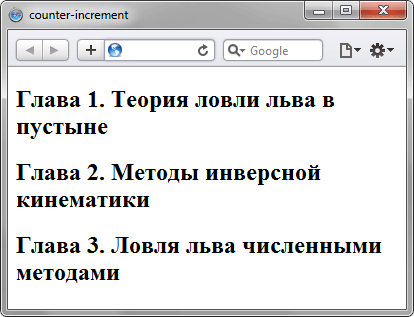

Описание
Стилевое свойство
counter-increment
предназначено для увеличения
значения счётчика приращений,
который задается свойством
counter-reset
.
Такой счётчик подсчитывает
количество отображений элементов
на странице и может выводиться
с помощью свойства
content
и псевдоэлементов
:after
и
:before
.
Это позволяет создавать списки
(в том числе многоуровневые),
в которых нумерация и вид
задаются через стили.
Синтаксис
counter-increment:
none | inherit |
идентификатор |
целое число
Значения
none
Запрещает увеличение счётчика для текущего селектора.
Запрещает увеличение счётчика для текущего селектора.
inherit
Наследует значение родителя.
Наследует значение родителя.
идентификатор
Задает одну или несколько переменных, для которых требуется изменить значение счётчика. Переменные разделяются между собой пробелом.
Задает одну или несколько переменных, для которых требуется изменить значение счётчика. Переменные разделяются между собой пробелом.
целое число
Определяет значение приращения счётчика. По умолчанию оно равно 1. Допускается использовать отрицательные и нулевые значения.
Определяет значение приращения счётчика. По умолчанию оно равно 1. Допускается использовать отрицательные и нулевые значения.
Возможные сочетания значений
свойств
counter-reset
и
counter-increment
показаны в таблице.
| Код | Результат |
|---|---|
LI {
list-style-type: none;
}
OL {
counter-reset: list -1;
}
LI:before {
counter-increment: list;
content:
counter(list) ". ";
}
|
Список начинается с нуля.
0, 1, 2 |
LI {
list-style-type: none;
}
OL {
counter-reset: list;
}
LI:before {
counter-increment: list 2;
content:
counter(list) ". ";
}
|
Выводятся все четные числа.
2, 4, 6 |
LI {
list-style-type: none;
}
OL {
counter-reset: list -1;
}
LI:before {
counter-increment:
list list;
content:
counter(list) ". ";
}
|
Выводятся все нечетные числа.
1, 3, 5 |
LI {
list-style-type: none;
}
OL {
counter-reset: list 9;
}
LI:before {
counter-increment: list;
content:
counter(list) ". ";
}
|
Список начинается с 10.
10, 11, 12 |
Пример
<!DOCTYPE html>
<html>
<head>
<meta charset="utf-8">
<title>
counter-increment
</title>
<style>
body {
counter-reset:
heading;
}
h2:before {
counter-increment:
heading;
content:
"Глава "
counter(heading)
". ";
}
</style>
</head>
<body>
<h2>
Теория ловли льва
в пустыне
</h2>
<h2>
Методы инверсной
кинематики
</h2>
<h2>
Ловля льва численными
методами
</h2>
</body>
</html>
Результат данного примера
показан на рисунке ниже.
